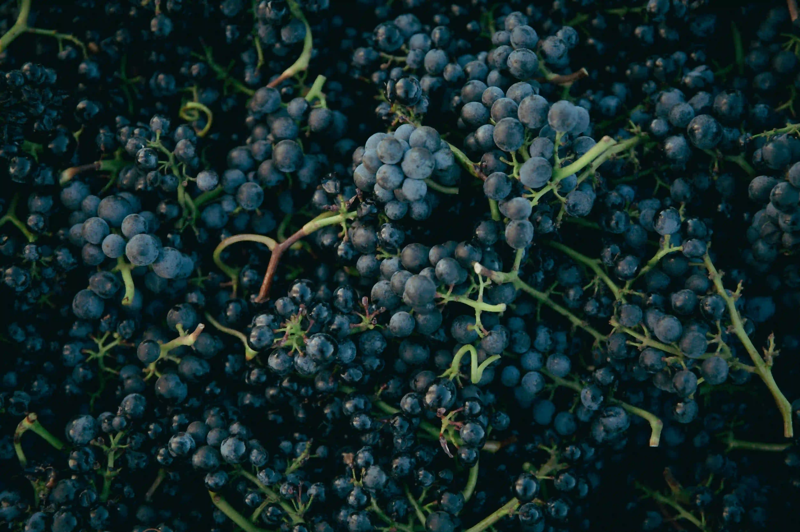

Популярні сорти винограду

Одним із найзагадковіших і найскладніших у вирощуванні сортів є Піно Нуар. Цей сорт має дуже тонку шкірку, що робить його вразливим до погодних умов, але водночас дозволяє створювати неймовірно елегантні, шовковисті вина з яскравими ароматами вишні, малини та підліску. У нашому магазині в Луцьку ви можете знайти класичні зразки з Бургундії, а також цікаві інтерпретації з Нового Світу (наприклад, з Орегону чи Нової Зеландії). Для поціновувачів білих вин ми підготували колекцію освіжаючого Совіньйон Блан. Його впізнаваний аромат маракуї, аґрусу та свіжоскошеної трави ідеально підходить для спекотних літніх вечорів. Завітайте до нас, щоб купити вино, яке ідеально доповнить вашу вечерю.